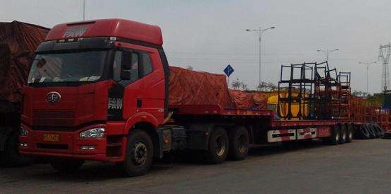
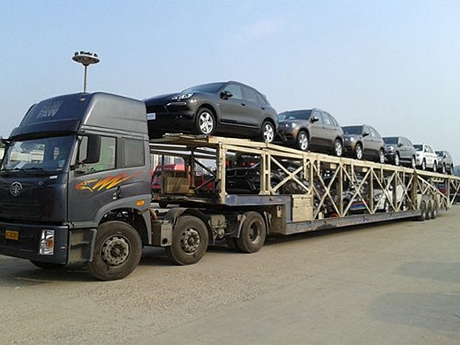

选择一家服务好、运输安全、保证时效的轿车托运公司，能为您省下许多时间和精力。您在开始轿车托运前，建议您再三考量，选择一家好的轿车托运公司。
传统物流一般采用货车混装，相对专业笼车托运，价格大概优惠一半，但由于货车混装，可能导致车受到伤害。因走物流渠道，运输时效可能得不到保证。

新兴的轿车托运采用专用笼车托运轿车，对车辆安全有保障，且运输时效有保障。若您的车较新，且资金较充裕，建议您选择具有笼车运输资质的托运公司托运。恒运达专业笼车托运，保证轿车托运安全快捷。
